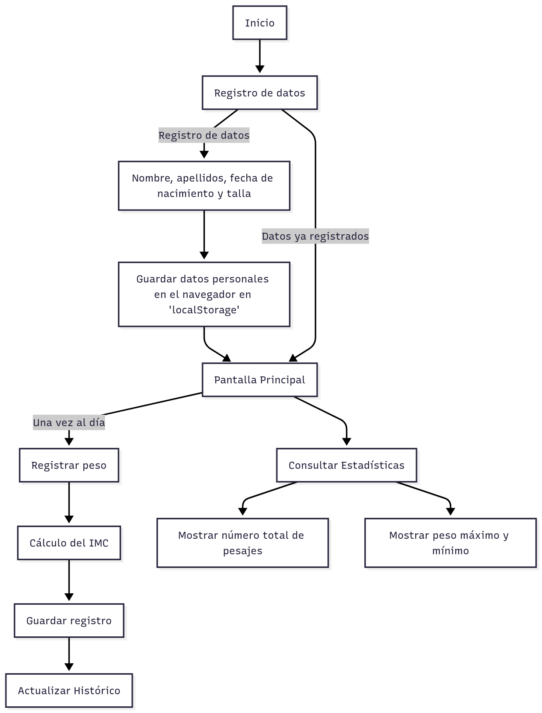

Manual de Usuario - Registro Personal de Peso e IMC¶
Inicio de Sesión y Bienvenida¶
Esta aplicación es estrictamente monousuario y no requiere un sistema de inicio de sesión tradicional (usuario/contraseña). La primera vez que accedas, te pediremos tus datos básicos.
1. Registro Inicial de Datos¶
Al abrir la aplicación por primera vez, se te solicitará introducir la siguiente información. Esta información se guardará en tu navegador para futuras sesiones:
Nombre
Apellidos
Fecha de Nacimiento
Talla (en metros): Introduce tu altura en metros (ejemplo:
1.75).
2. Bienvenida Personalizada¶
Una vez guardados tus datos, cada vez que inicies la aplicación, serás recibido con un saludo personalizado usando tu nombre, creando una experiencia más cercana.
Registro de Peso y Visualización del IMC¶
Esta es la funcionalidad central de la aplicación. Te permite registrar nuevos datos y te da una retroalimentación inmediata sobre tu IMC.
1. Registrar un Nuevo Peso¶
En la sección principal de la aplicación, encontrarás el formulario de registro:
Peso (en kilos): Introduce tu peso actual en kilogramos (ejemplo:
78.5).Pulsa el botón “Guardar Peso” para guardar la entrada con la fecha y hora actuales.
Registros Múltiples en el Mismo Día:
Si registras más de un peso en el mismo día, el nuevo registro reemplazará automáticamente al anterior del mismo día.
Esto significa que solo se mantendrá el último peso registrado de cada día.
Esta funcionalidad te permite corregir un registro erróneo simplemente introduciendo el peso correcto nuevamente.
Validación de Variación de Peso: La aplicación incluye una validación de seguridad que limita la variación de peso permitida según los días transcurridos desde el último registro de un día diferente. Esta limitación se basa en consideraciones físicas realistas:
Límite de variación: No se permite una variación mayor a 5 kilogramos por día desde el último registro de peso de un día diferente.
Ejemplo: Si han pasado 3 días desde tu último registro de un día diferente, la variación máxima permitida será de 15 kg (3 días × 5 kg/día).
Importante: La validación se realiza comparando con el último peso registrado de un día diferente. Si registras múltiples pesos el mismo día, la validación siempre se hace respecto al último peso de un día anterior.
Si intentas registrar un peso que excede esta variación, la aplicación mostrará un mensaje de error informativo que indica:
Cuántos días han pasado desde el último registro de un día diferente
La variación máxima permitida según los días transcurridos
La diferencia actual entre el peso que intentas registrar y el último peso registrado de un día diferente
2. Cálculo y Descripción del IMC¶
Inmediatamente después de registrar un nuevo peso, la aplicación mostrará tu IMC actual y una breve descripción.
Fórmula utilizada: El Índice de Masa Corporal (IMC) se calcula dividiendo tu peso (en kilogramos) por el cuadrado de tu altura (en metros). $$\text{IMC} = \frac{\text{Peso (kg)}}{\text{Talla (m)}^2}$$
Descripción: Se incluirá un texto conciso que explica lo que significa tu valor de IMC actual (ej. “Bajo peso,” “Peso normal,” “Sobrepeso,” etc.).
Estadísticas Históricas de Peso¶
La aplicación lleva un control automático de todos tus registros para ofrecerte datos resumidos de tu progreso.
1. Contador de Pesajes¶
La aplicación mostrará claramente el número de pesajes realizados hasta la fecha, indicando la cantidad total de registros que has guardado en la aplicación.
2. Peso Máximo Registrado¶
Se indicará el peso máximo que has introducido desde que comenzaste a usar la aplicación.
3. Peso Mínimo Registrado¶
Se indicará el peso mínimo que has introducido desde que comenzaste a usar la aplicación.
Consideraciones Técnicas¶
Almacenamiento de Datos: Dado que la aplicación es solo para ti, todos tus datos (nombre, peso, etc.) se almacenan localmente en tu navegador web (usando tecnologías como
localStorage).Importante: Si borras la caché o los datos de navegación de tu navegador, perderás todos los datos de esta aplicación. Es crucial evitar borrar los “Datos de sitios web” si quieres conservar tu historial.
Validaciones y Restricciones¶
La aplicación incluye las siguientes validaciones para garantizar la integridad de los datos:
Validaciones de Entrada¶
Talla: Debe estar entre 0.4 y 2.72 metros.
Peso: Debe estar entre 2 y 650 kilogramos.
Fecha de Nacimiento: Debe estar entre el año 1900 y la fecha actual.
Variación de Peso Diaria: No se permite una variación mayor a 5 kg por día desde el último registro de un día diferente. Si registras múltiples pesos el mismo día, el nuevo reemplazará al anterior y la validación se realizará respecto al último peso de un día diferente.
Si alguna de estas validaciones falla, la aplicación mostrará un mensaje de error claro indicando el problema y cómo corregirlo.
Diagrama¶
Aquí puedes ver un resumen del funcionamiento mediante un diagrama.
